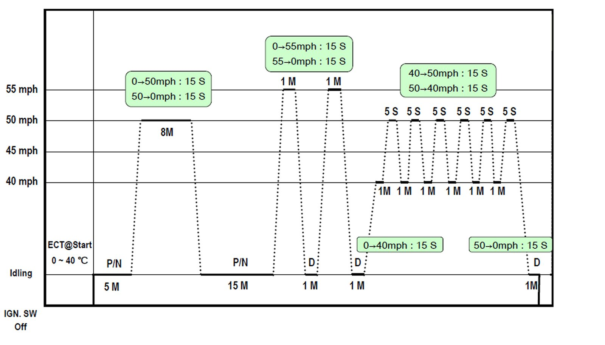

Monitors, Trips, Drive Cycles and Readiness Codes
HYUNDAI DRIVE CYCLE TO SET OBD READINESS CODES
(All models except for 2006-2007 Sonata V6, Azera, and 2007 Entourage and Santa Fe)
General instructions:
Perform this drive cycle until the required number of readiness codes are set as required by your State test.

Drive Schedule Notes:
1. Coolant needs to be within 0 to 40C (0 to 104F) at start
2. Fuel level must be above 15%
3. When decelerating from 50-55mph there needs to be at least 5 sec of fuel cut-off; its best to close throttle as soon as possible for 5 secs to assure decel fuel cutoff occurs
4. Try to maintain constant throttle as much as possible during the steady state speed portions of the drive cycle
Cautions:
1. This schedule is best driven on a dyno if available, otherwise find the best road with least traffic
2. Obey speed limits and drive safely
3. If you lose the schedule due to traffic, attempt to get back to it when conditions are safe to do so.
4. Keep your eye on the road and avoid looking at the schedule constantly; its best to have a passenger describe the schedule to you while driving